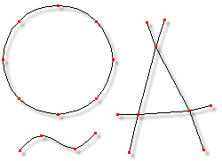

What are Control Points?
What are Control Points?
Control points are the individual red or green squares that make up a spline and indicate where you can click to move or adjust that spline. Splines enter a control point on one side and exit it on the other, making them directional. This means that while you are modeling, splines can change directions.

Examples of Control Points and their associated splines.
Control points can be moved in Edit mode by pointing at them with the mouse, pressing and holding the mouse button, and dragging the control point. The control point you have selected will turn green when you click on it, as will the spline that is associated with that control point. The control point you last clicked on is always the selected control point, whether or not it is in a group.
When multiple splines share the same control point, the spline closest to where you click on the control point will become selected. Moving a control point with several splines passing through it will cause all of the splines to move at once.
Related Topics:
Splines
Patches